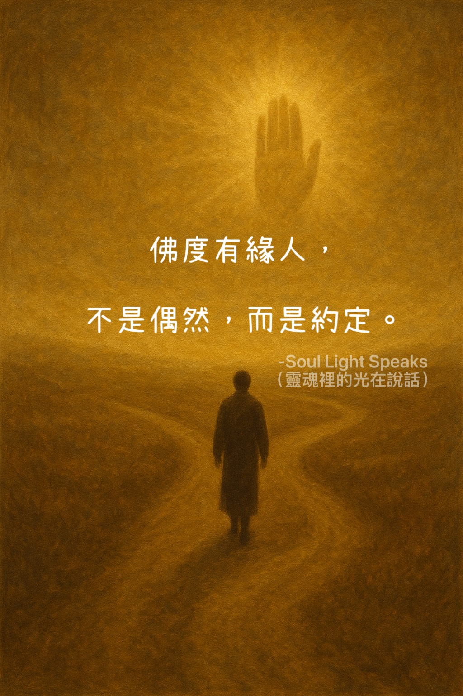

佛度有緣人，
不是偶然，而是約定。
不是偶然，而是約定。
人常說：佛度有緣人。
所謂「有緣」，並非偶然巧合，而是靈魂早已留下的契約與印記。
有些人，是前世已立下承諾，今生注定要走上修行之路；
有些人，則因苦難而暫時依靠佛法，但最終仍要回到人間的考場，去完成靈魂該面對的功課。
佛法並不是逃避現實，而是提醒與引導。
真正的「度」，不是把人帶離人生，而是幫助人重新走回自己該走的路，帶著清明與智慧，面對生命的試卷。
因為每一顆靈魂，終須在人世間完成答案。